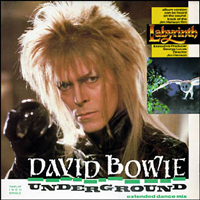
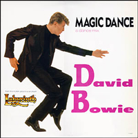

1986 - LABYRINTH |
||||
Trevor Jones' music for this elaborate and ambitious Jim Henson / George Lucas production was filled with synthesizers blended cautiously into orchestral ensembles to provide a suitably ethereal tone - one echoed very well by David Bowie's Goblin King singing the haunting Within You while stalking the film's heroine. This variant on the Persephone story, however, was treated as a half-hearted musical, with the Goblin King and his minions breaking out into raucous pop every so often, a tactic that undermined the tone of the entire film and upended the score. While Underground is a more than adequate Bowie entry, Magic Dance and others have a tendency to fall flat. A curious hodgepodge indeed. |
||||
OPENING TITLES It's only forever Not long at all The lost and lonely No one can blame you For walking away But too much rejection No love injection Life can be easy It's not always swell Don't tell me truth hurts little girl 'Cause it hurts like hell But down in the underground You'll find someone true Down in the underground A land serene A crystal moon It's only forever It's not long at all The lost and lonely That's underground Underground MAGIC DANCE You remind me of the babe What babe? Babe with the power What power? Power of voodoo Who do? You do Do what? Remind me of the babe I saw my baby, crying hard as babe could cry What could I do My baby's love had gone And left my baby blue Nobody knew What kind of magic spell to use Slime and snails Or puppy dogs' tails Thunder or lightning Then baby said Dance magic, dance (dance magic, dance) Dance magic, dance (dance magic, dance) Put that baby spell on me Jump magic, jump (jump magic, jump) Jump magic, jump (jump magic, jump) Put that magic jump on me Slap that baby, make him free I saw my baby, trying hard as babe could try What could I do My baby's fun had gone And left my baby blue Nobody knew What kind of magic spell to use Slime and snails Or puppy dogs' tails Thunder or lightning Then baby said Dance magic, dance (dance magic, dance) Dance magic, dance (dance magic, dance) Put that baby spell on me Jump magic, jump (jump magic, jump) Jump magic, jump (jump magic, jump) Put that magic jump on me Slap that baby, make him free Dance magic, dance (dance magic, dance) Dance magic, dance (dance magic, dance) Dance magic, dance (dance magic, dance) Dance magic, dance (dance magic, dance) Jump magic, jump (jump magic, jump) Jump magic, jump (jump magic, jump) Put that baby spell on me (ooh) You remind me of the babe What babe? The babe with the power What power? Power of voodoo Who do? You do Do what? Remind me of the babe Dance magic, dance, ooh ooh ooh Dance magic, dance magic, ooh ooh ooh Dance magic What kind of magic spell to use Slime and snails Or puppy dogs' tails Thunder or lightning Something frightening Dance magic, dance Dance magic, dance Put that baby spell on me Jump magic, jump Jump magic, jump Put that magic jump on me Slap that baby make him free Dance magic, dance (dance magic, dance) Dance magic, dance (dance magic, dance) Dance magic, dance (dance magic, dance) Dance magic, dance (dance magic, dance) Jump magic, jump (jump magic, jump) Jump magic, jump Put that magic jump on me Slap that baby Dance magic, dance (dance magic, dance) Dance magic, dance (dance magic, dance) Dance magic Slap that slap that baby make him free CHILLY DOWN When the sun goes down (when the sun goes down) And the bats are back to bed (and the bats are back) The brothers come 'round (the brothers come 'round) I get out of my dirty bed (my dirty bed) I shake my pretty little head (I shake my pretty little head) Tap my pretty little feet (tap my pretty little feet) Feeling brighter than sunlight (oh) Louder than thunder (oh) Bouncing like a yo-yo, whoa (oh) Don't got no problems (no problems) Ain't got no suitcase (no suitcase) Ain't got no clothes to worry about (no clothes to worry about) Ain't got no real estate or jewelry or gold mines to hang me up I just throw in my hand (throw in my hand) With the chilliest bunch in the land (in the land) They don't look much (oh) They sure chilly chilly (oh) They positively glow glow, huh (oh) Chilly down with the fire gang Think small with the fire gang (It's the only way) Bad hep with the fire gang (a smile a day keeps the doctor away) When your thing gets wild Chilly down Chilly down with the fire gang (Hey, I'm a wild child) Act tall with the fire gang (whoa, walk tall) Good times, bad food (yeah) When your thing gets wild Chilly down, chilly down Drive you crazy, really lazy, eye rolling, funky strolling, ball playing Hip swaying, trouble making, booty shaking, tripping, passing, jumping Bouncing, driving, styling, creeping, pouncing, shouting, screaming Double dealing, rocking, rolling, and a reeling With the making sex appealing Can you dig our groovy feeling? So when things get too tough (get too tough) And your chin is dragging on the ground (dragging on the ground) And even down looks up (down looks up) Bad luck heh heh We can show you a good time (show you a good time) And we don't charge nothing (nothing at all) Just strut your nasty stuff Wiggle in the middle yeah Get the town talking, fire gang Chilly down with the fire gang (think small) Think small with the fire gang Bad hep with the fire gang (hey, listen up) When your thing gets wild Chilly down Chilly down with the fire gang (hey, shake your pretty little head) Act tall with the fire gang (tap your pretty little feet) Good times, bad food (come on, come on) When your thing gets wild Chilly down Chilly down with the fire gang (whoa) Think small with the fire gang Bad hep with the fire gang AS THE WORLD FALLS DOWN There's such a sad love Deep in your eyes A kind of pale jewel Open and closed Within your eyes I'll place the sky Within your eyes There's such a fooled heart Beating so fast In search of new dreams A love that will last Within your heart I'll place the moon Within your heart As the pain sweeps through Makes no sense for you Every thrill is gone Wasn't too much fun at all But I'll be there for you As the world falls down Falling Falling down Falling in love I'll paint you mornings of gold I'll spin you Valentine evenings Though we're strangers 'til now We're choosing the path Between the stars I'll leave my love Between the stars As the pain sweeps through Makes no sense for you Every thrill is gone Wasn't too much fun at all But I'll be there for you As the world falls down Falling As the world falls down Falling As the world falls down Falling Falling Falling Falling in love As the world falls down Falling Falling Falling Falling Falling in love As the world falls down Makes no sense at all Makes no sense to fall Falling As the world falls down Falling Falling in love As the world falls down Falling Falling Falling in love As the world falls down WITHIN YOU How you turn my world You precious thing You starve and near exhaust me Everything I've done I've done for you I move the stars for no one You've run so long You've run so far Your eyes can be so cruel Just as I can be so cruel Oh I do believe in you Yes I do Live without your sunlight Love without your heartbeat I, I can't live within you I can't live within you I, I can't live within you UNDERGROUND No one can blame you For walking away Too much rejection No love injection Life can't be easy It's not always swell Don't tell me truth hurts, little girl 'Cause it hurts like hell But down in the underground You'll find someone true Down in the underground A land serene A crystal moon Ah It's only forever Not long at all Lost and lonely That's underground Underground Daddy, daddy, get me out of here Heard about a place today I, I'm underground Nothing ever hurts again Heard about a place today Daddy, get me out of here Where nothing ever hurts again Daddy, daddy, get me out of here I, I'm underground Sister, sister, please take me down I, I'm underground Daddy, daddy, get me out of here No one can blame you For walking away Too much rejection No love injection Down in the underground You'll find someone true Down in the underground A land serene A crystal moon Ah It's only It's only forever It's not long at all Lost and lonely That's underground Underground Daddy, daddy, get me out of here Heard about a place today Nothing never hurts again Daddy, daddy, get me out of here I'm, I'm underground Sister, sister, please take me down I'm, I'm underground Daddy, daddy, get me out Wanna live underground Wanna live underground Wanna live underground Wanna live underground Wanna live underground Wanna live underground Wanna live underground Wanna live underground Daddy, daddy, get me out of here I'm, I'm underground Sister, sister please take me down I, I'm underground I, I'm underground I, I'm underground Daddy, daddy, get me Daddy, daddy, get me Wanna live underground Sister, sister, take me down |
||||
SINGLES |
||||
  |
||||